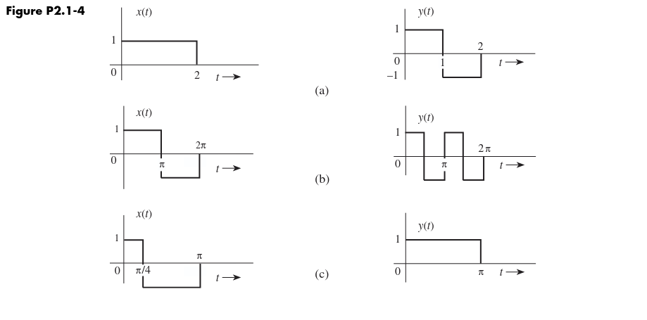
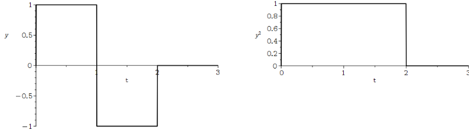
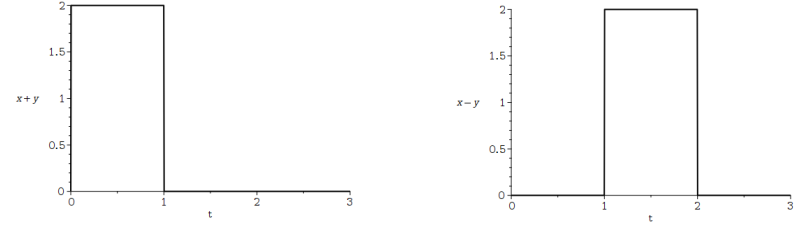
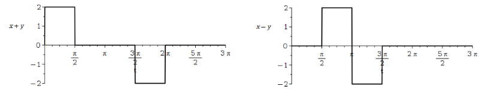
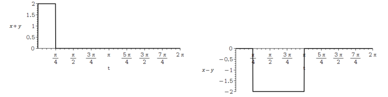

$\textbf{Question}:\\$ (a) Find $E_x$ and $E_y$ for the signals in Fig. 2.1-4a. Sketch $x(t)+y(t)$ and $x(t)-y(t)$ and show that the energies of these two signals equal $E_x+E_y$.
Repeat the procedure for the signals in Fig. 2.1-4b.
(b) Repeat the procedure for the signals in Fig. 2.1-4c. Are the energies of $x(t)+y(t)$ and $x(t)-y(t)$ identical?

Figure taken from Lathi's "Modern digital and analog communication systems" 5th ed.
$\textbf{Answer}:\\$
Recall, that for piecewise constant functions the sign does not influence the energy.
This is because when squaring an alternating waveform like $y(t)$ the resulting waveform will always be positive, as seen in the plot below.
Realizing this makes the integrals for calculating the energy very easy to evaluate.

So, for the first pair of waveforms in (a) we obtain
$$\begin{align}E_x &= \int_{0}^{2} 1 \: \text{d}t=\Big[ t \Big]^2_0 = 2 \\\\
E_y &=\int_{0}^{2} 1 \: \text{d}t = 2 \end{align}$$
Below we have plotted $x(t)+y(t)$ and $x(t)-y(t)$ respectively.

Their energies are
$$\begin{align}E_{x+y} &= \int_0^1 2^2 \: \text{d}t = 4 \\\\
E_{x-y} &= \int_1^2 2^2 \: \text{d}t = 4\end{align}$$
For the waveform pair in (b) the energies are evaluated in the same way. Again, the alternation between $-1$ and $1$ has no influence on the energy, so the integrals can be evaluated
by considering the integrand to be constant.
$$\begin{align}E_{x} &= \int_0^{2\pi} 1 \: \text{d}t = 2\pi \\\\
E_{y} &= \int_0^{2\pi} 1 \: \text{d}t = 2\pi\end{align}$$
Again, we plot the function sum and difference, and they are seen below.

Their energies are
$$\begin{align}E_{x+y} &= \int_0^{\frac{\pi}{2}} 2^2 \: \text{d}t + \int_{\frac{3\pi}{2}}^{2\pi} 2^2 \: \text{d}t = 2\pi + 2\pi = 4\pi \\\\
E_{x-y} &= \int_{\frac{\pi}{2}}^{\frac{3\pi}{2}} 2^2 \: \text{d}t = 4\pi\end{align}$$
Lastly, we have the signals in (c) with energies
$$\begin{align}E_{x} &= \int_0^{\pi} 1 \: \text{d}t = \pi \\\\
E_{y} &= \int_0^{\pi} 1 \: \text{d}t = \pi \end{align}$$
Their sum and difference are plotted below:

The energies of the sum and difference signals are
$$\begin{align}E_{x+y} &= \int_0^{\frac{\pi}{4}} 2^2 \: \text{d}t = \pi \\\\
E_{x-y} &= \int_{\frac{\pi}{4}}^{\pi} 2^2 \: \text{d}t = 3\pi\end{align}$$
$\textbf{Comments}:\\$
In case (a) and (b) we saw that $E_x+E_y = E_{x+y} = E_{x-y}$. This happens, because in those cases $x(t)$ and $y(t)$ are orthogonal, so the sum of their individual energies equals the energies of their sum/difference. I.e. in orthogonal signals the energy is preserved through addition.
In case (c) $x(t)$ and $y(t)$ are not orthogonal, hence $E_x+E_y \neq E_{x+y} \neq E_{x-y}$